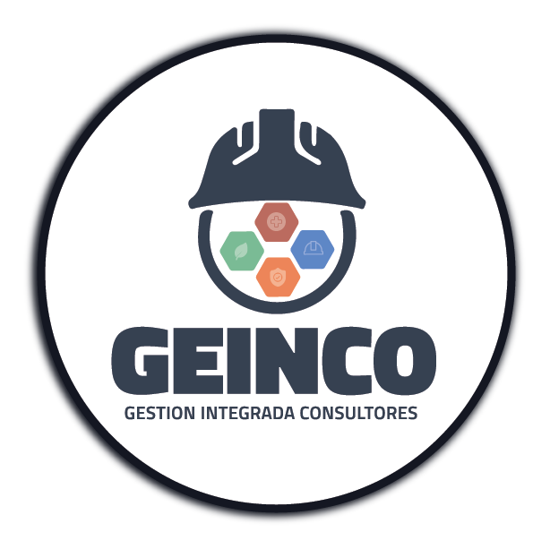

VALORES
El primer propósito de nuestra firma es glorificar a Dios
(Jesucristo).
Proverbios 1:7 El principio de la sabiduría es el temor de
Dios.
Los valores que rigen a SEAAT son un conjunto de principios básicos
cristianos que guían nuestro comportamiento tanto de manera
individual como de manera colectiva. Son lineamientos que nos sirven
como guía para crear y mejorar nuestros lazos y expectativas dentro
de la empresa como con la comunidad. Nos proporcionan un terreno
común para unirnos a través de culturas y geografías. Y, lo que es
más importante, nos ayudan a ganarnos la confianza y el respeto
tanto de nuestros clientes, colaboradores como de la sociedad.
NUESTROS SERVICIOS

SERVICIOS LEGALES
- Notariales
- Procesos de Inquilinato
- Concurso de Acreedores, Quiebras, Liquidaciones Financieras y Procesos Afines
- Concilación y Arbitraje
- Asuntos en Materia Laboral
- Asesoría y Dirección Profesional
- Asuntos en Materia Administrativa
- Derecho Bancario
- Participación Profesional en Concursos, Subastas, Contrataciones Directas, Licitaciones y Contratos Administrativos
- Asuntos relacionados con extranjeros
ASUNTOS TRIBUTARIOS O FISCALES:
- Tramites Tributarios (Regímenes especiales y Solicitud de exoneraciones de impuestos)
- Impuesto Sobre La Renta, Activo Neto, Aportación Solidaria Temporal, Impuesto Sobre Ventas, Tasa de Seguridad poblacional, Carnet de ayuda Humanitaria, Dispensas)
- ZOLI
- RIT
- ZOLITUR
- Trámites de concesiones, Permisos y Licencias de Recursos Naturales, Ambientales, Agricultura y Ganadería.
CONCESIONES MINERAS METÁLICA Y NO METÁLICA:
- Concesión de Hidrocarburo
- Concesión Relacionada con el Aprovechamiento de Agua Nacionales y el Recurso Marino Costero.
- Concesiones Pesqueras
MATERIA DE SUSTANCIAS PELIGROSAS
TRÁMITES DE OTROS PERMISOS AMBIENTALES ANTE AUTORIDADES ADMINISTRATIVAS:
-
Licencia Ambiental:
- Categoría Uno
- Categoría Dos
- Categoría Tres
- Categoría Cuatro
- Exoneración de Impuesto otorgada por SERNA, se deberá aplicar el Literal referente a los Asuntos Tributarios y Fiscales
ASUNTOS O DILIGENCIAS, RELACIONADAS CON LA ADMINISTRACIÓN PÚBLICA Y ENTIDADES DESCENTRALIZADAS AUTÓNOMAS Y MIXTAS:
- Asuntos de Propiedad Intelectual e Industrial
- Trámite elacionado a patentes
- Permisos de Construcción
- Municipales
- Tratados
- Regimenes Especiales
ASUNTOS REGÍSTRALES:
- Extrajudiciales
- Estudio de Expedientes
- Redacción de Actas
- Cobro Extrajudicial
-
Títulos Valores:
elaboración de pagaré, cheque, acciones, certificados de depósito, letras de cambio, bono de prenda, - Redacción de Contratos
ALIANZAS
